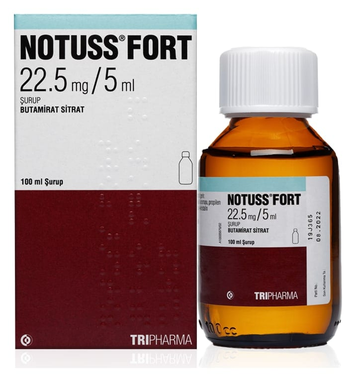

Notuss Fort 22.5 mg/5 ml Şurup, 60 ml

Ne için kullanılır
KT · Bölüm 1• NOTUSS FORT etkin madde olarak butamirat sitrat içeren, şurup formunda bir ilaçtır. • NOTUSS FORT, “öksürük baskılayıcı ilaçlar” olarak adlandırılan bir ilaç grubuna dahildir. • NOTUSS FORT, çocuk emniyetli HDPE kapaklı, amber renkli 60 ml ve 100 ml’lik cam şişelerde ölçekle birlikte kullanıma sunulmaktadır. • NOTUSS FORT çeşitli nedenlerden kaynaklanan öksürüğün şikayetlere yönelik (semptomatik) tedavisinde kullanılır.